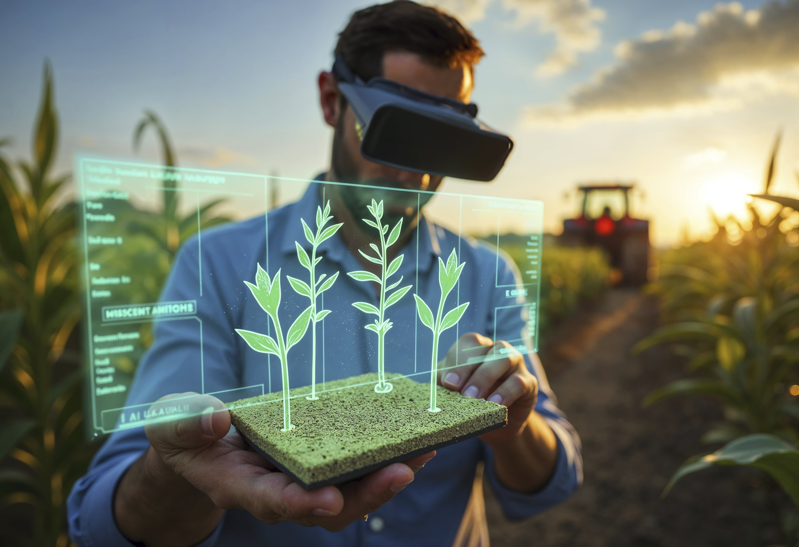
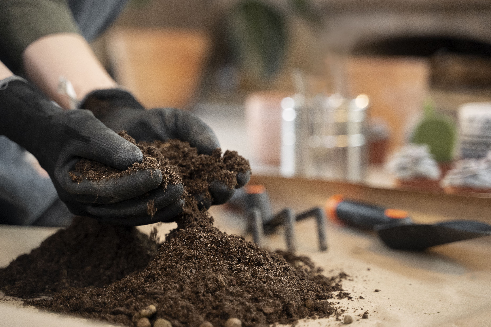
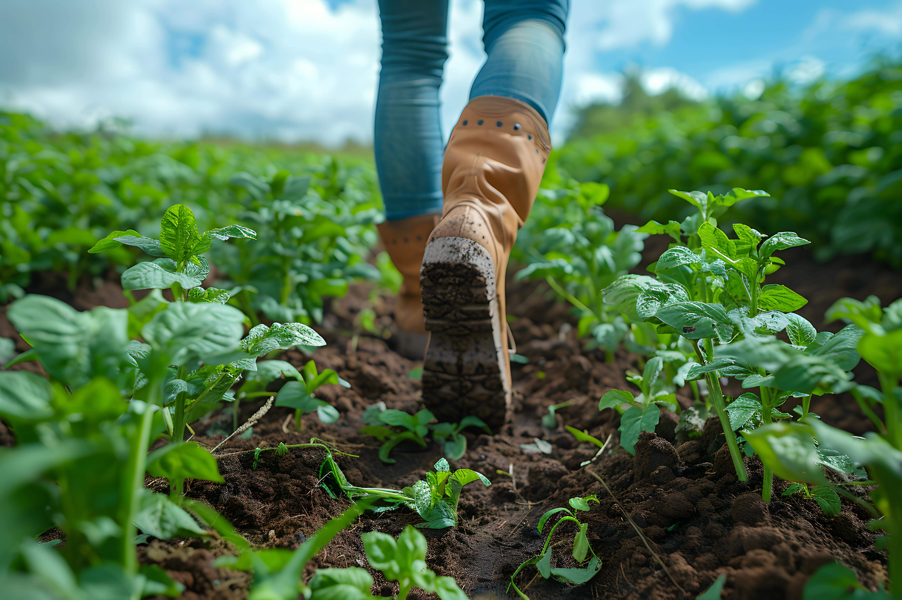
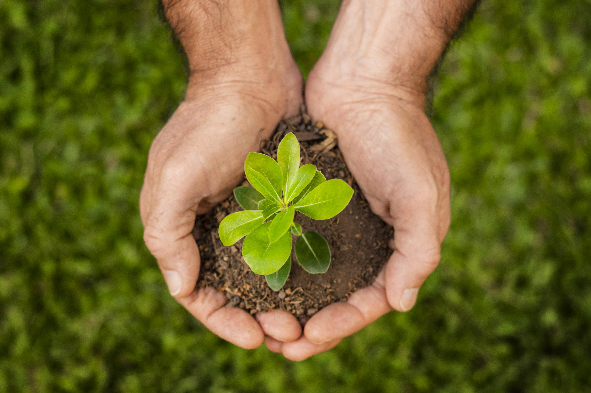
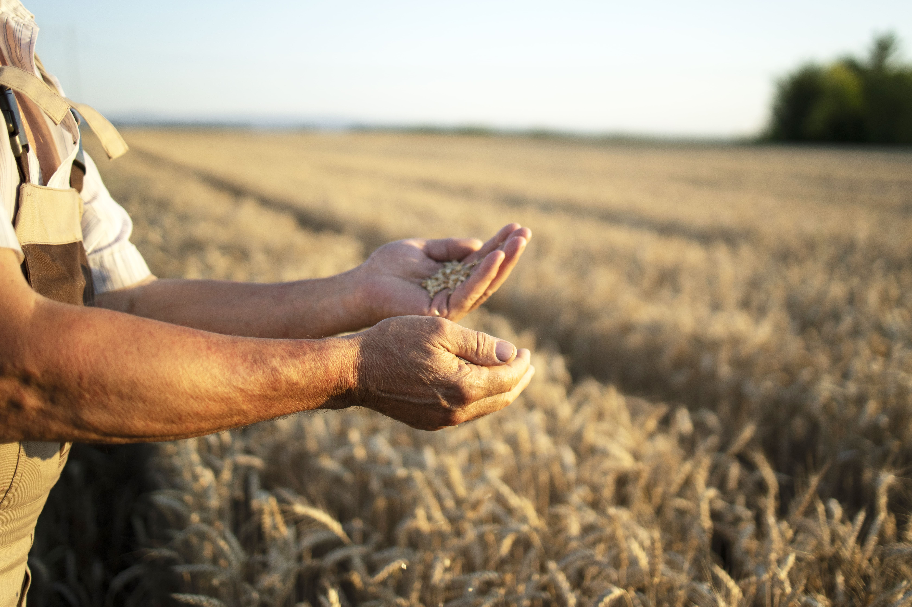
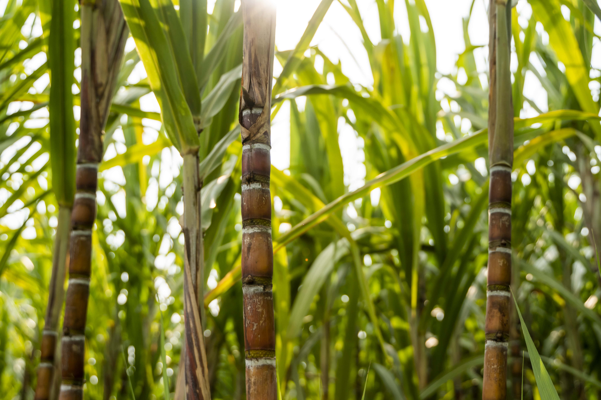
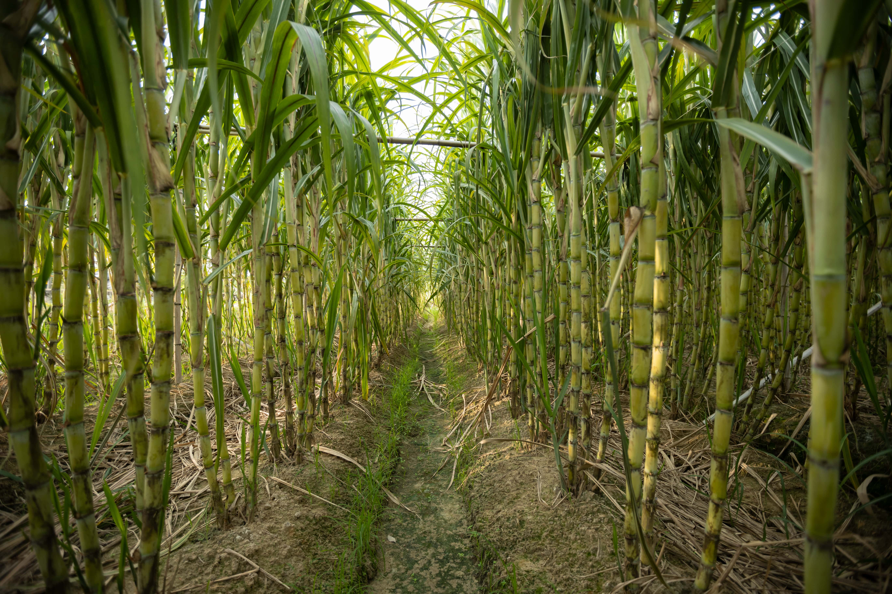
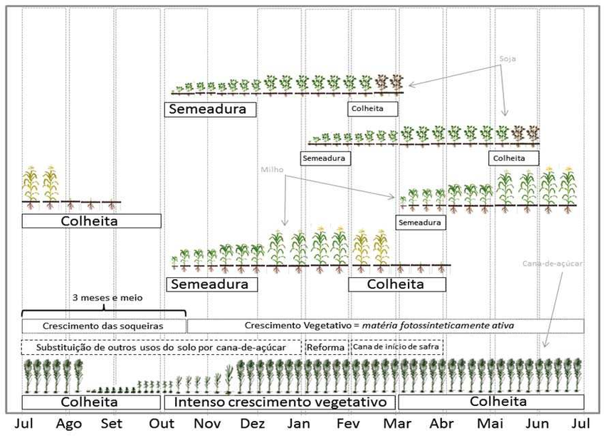

BEM-VINDO AO GUIA DO AGRICULTOR
INTRODUÇÃO
A agricultura é uma das atividades mais antigas e fundamentais da humanidade. Cultivar a terra, produzir alimentos e manter o equilíbrio com o meio ambiente são responsabilidades que exigem conhecimento, técnica e dedicação. Com o avanço da tecnologia e da ciência agronômica, o agricultor moderno deixou de ser apenas um trabalhador braçal para se tornar um verdadeiro gestor rural, capaz de tomar decisões estratégicas que afetam diretamente a produtividade, a qualidade dos alimentos e a sustentabilidade do campo.
Este Guia do Agricultor foi criado com o objetivo de oferecer um conteúdo claro, organizado e acessível para quem deseja iniciar ou aperfeiçoar suas práticas agrícolas. Seja você um pequeno produtor, um estudante de agricultura ou alguém interessado no cultivo familiar, aqui encontrará um conjunto de orientações essenciais para trilhar o caminho do sucesso no campo.
Neste guia, você aprenderá:
- A importância do preparo do solo e como realizar análises e correções adequadas.
- O manejo correto de ferramentas e sementes, garantindo melhores resultados no plantio.
- As épocas ideais de cultivo para diversas culturas como milho, alface, cana-de-açúcar, soja e outras.
- As etapas do plantio explicadas passo a passo, com destaque para o ciclo da cana-de-açúcar.
- A importância da gestão agrícola, abordando planejamento, finanças, controle de insumos e produtividade.
Além disso, trazemos tabelas comparativas, dicas práticas, referências confiáveis e uma linguagem acessível para facilitar o aprendizado. Nosso foco é entregar um conteúdo minimalista, visualmente limpo e funcional, para que a sua navegação seja simples e eficaz.
A terra é fértil e o conhecimento é a semente que faz tudo florescer.
Bem-vindo ao seu caminho para se tornar um excelente agricultor!
GESTÃO AGRICOLA
O QUE É?
Gestão Agrícola é o processo de planejar, organizar, controlar e avaliar todas as atividades de uma propriedade rural. Vai muito além de apenas plantar e colher, envolve decisões estratégicas sobre produção, recursos humanos, finanças, meio ambiente, mercado e tecnologia.
-min.jpg)
Principais Pilares da Gestão Agrícola
1. Planejamento da Produção
- Escolha da cultura adequada para o solo e clima.
- Definição de metas de produtividade.
- Elaboração de cronogramas: plantio, tratos culturais, colheita.
- Rotação de culturas e planejamento de safras.
EXEMPLO: Planejar a safra de milho após a colheita da soja, otimizando o uso do solo e do maquinário.
2. Gestão Financeira
- Controle de custos (insumos, mão de obra, energia, maquinário).
- Planejamento de fluxo de caixa.
- Análise de lucro e prejuízo.
- Acesso a crédito rural e linhas de financiamento.
FERRAMENTAS ÚTEIS: Planilhas financeiras, softwares como AgroOffice e Produtor Online.
3. Gestão de Pessoas
- Organização da equipe de trabalho no campo.
- Capacitação de funcionários (boas práticas, segurança, operação de máquinas).
- Motivação e divisão de tarefas conforme especialização.
EXEMPLO: Treinar o operador de trator para uso eficiente de combustível e manutenção preventiva.
4. Gestão de Insumos e Estoque
- Armazenamento correto de sementes, fertilizantes e defensivos.
- Controle de vencimentos e perdas.
- Compra estratégica (em época de menor custo).
PRÁTICA SUSTENTÁVEL: Planejar a quantidade certa de insumos para evitar desperdícios e contaminações.
5. Tecnologia no Campo (Agro 4.0)
- Uso de drones, GPS, sensores, aplicativos e software agrícola.
- Monitoramento de clima, umidade, pragas e produtividade.
- Agricultura de precisão para aplicar insumos com maior eficiência.
EXEMPLO: Usar sensores no solo para determinar o momento certo da irrigação.
6. Sustentabilidade e Legislação
- Cumprimento de normas ambientais e trabalhistas.
- Preservação de nascentes, matas ciliares e uso racional da água.
- Gestão de resíduos e embalagens de agrotóxicos.
APOIO A ÓRGÃOS: IBAMA, MAPA e Embrapa.
7. Comercialização e Mercado
- Análise do mercado consumidor.
- Busca por canais de venda: cooperativas, feiras, exportação.
- Acompanhamento de preços e custos de transporte.
EXEMPLO: Vender alface orgânica para mercados locais com maior valor agregado.

Benefícios de uma Boa Gestão Agrícola
- ✅ Aumento da produtividade
- ✅ Redução de custos e desperdícios
- ✅ Melhor qualidade dos produtos
- ✅ Maior rentabilidade
- ✅ Sustentabilidade a longo prazo
- ✅ Tomada de decisões mais assertivas
Referência: MyFarm - Como ser um agricultor de sucesso?
O CUIDADO COM O SOLO
Solo é a base da vida na Terra.
O solo é um recurso natural vital porque nele se desenvolvem as plantas, que são a base das cadeias alimentares. Sem um solo saudável, as plantas não conseguem crescer bem, o que compromete toda a produção de alimentos para humanos e animais.
Etapas do Preparo:
- Análise de Solo: Coletar amostras do solo para identificar níveis de nutrientes, pH e necessidade de correções.
- Calagem: Aplicação de calcário para corrigir a acidez do solo, aumentando a disponibilidade de nutrientes essenciais.
- Aração e Gradagem: A aração revolvem o solo, descompactando-o, enquanto a gradagem quebra torrões e nivela a superfície.
- Subsolagem: Indicada para solos com camadas compactadas profundas, permitindo melhor infiltração de água e desenvolvimento radicular.
- Plantio Direto: Sistema que preserva a estrutura do solo, mantendo a palhada na superfície, reduzindo a erosão e melhorando a fertilidade.

IMPORTÂNCIA DO CUIDADO
O solo armazena nutrientes essenciais.
O solo contém nutrientes como nitrogênio, fósforo, potássio e muitos outros minerais que as plantas precisam para crescer. Quando o solo está bem cuidado, esses nutrientes ficam disponíveis na forma certa para as plantas absorverem pelas raízes.O solo contém nutrientes como nitrogênio, fósforo, potássio e muitos outros minerais que as plantas precisam para crescer. Quando o solo está bem cuidado, esses nutrientes ficam disponíveis na forma certa para as plantas absorverem pelas raízes.
- Se o solo estiver degradado ou esgotado, ele perde esses nutrientes e as plantas ficam fracas ou morrem.
- Além disso, um solo saudável tem boa capacidade de reter nutrientes e água, o que ajuda as plantas em períodos de seca.
É um meio fundamental para a produção de alimentos e a economia.
A qualidade do solo impacta diretamente na produtividade agrícola. Solo saudável significa colheitas mais abundantes, de melhor qualidade, com menos uso de insumos químicos e menor custo para o produtor.
- Solo degradado leva à queda da produção, aumento de custos e até ao abandono das terras.
- Cuidar do solo é investir na sustentabilidade da agricultura e na segurança alimentar da população.
Consequências do mau cuidado do solo.
Se não cuidarmos do solo, podemos enfrentar vários problemas graves:
- Desertificação: o solo vira areia ou terra árida sem vida.
- Contaminação: uso excessivo de agrotóxicos e poluentes prejudica o solo e a saúde.
- Redução da biodiversidade e degradação dos ecossistemas naturais.
- Menor capacidade produtiva agrícola e, consequentemente, aumento da fome.
UM SOLO SAUDÁVEL ajuda na retenção de água.
Solo com boa estrutura com matéria orgânica, porosidade e vida microbiana é capaz de reter a água da chuva. Isso evita que a água escorra rapidamente e cause erosão, além de garantir que as plantas tenham acesso a água por mais tempo.
- Solo compactado ou pobre perde a capacidade de absorver e armazenar água.
- Isso causa maior desperdício de água, inundações e secas prolongadas, prejudicando plantações e ecossistemas.
UM SOLO SAUDÁVEL evita a erosão.
A erosão é o desgaste do solo causada por água, vento ou outras forças naturais. Ela remove a camada superficial do solo, que é a mais fértil e rica em nutrientes.
- Quando o solo está bem cuidado, coberto por plantas ou matéria orgânica, ele fica protegido da erosão.
- Se o solo for exposto, sem vegetação, ele é facilmente levado pelo vento ou pela água, comprometendo a fertilidade e causando problemas ambientais, como assoreamento de rios.
UM SOLO SAUDÁVEL mantém a biodiversidade.
O solo não é só terra — é um ecossistema vivo. Ele abriga milhões de organismos, como bactérias, fungos, minhocas, insetos, que ajudam a decompor matéria orgânica, reciclar nutrientes e manter o equilíbrio do ambiente.
- Cuidar do solo significa preservar essa biodiversidade essencial para processos naturais que sustentam a vida.
- A perda desses organismos diminui a fertilidade do solo e pode levar ao uso maior de fertilizantes químicos, que causam mais danos.
UM SOLO SAUDÁVEL contribui para o combate às mudanças climáticas.
O solo é um dos maiores reservatórios naturais de carbono do planeta. Quando ele está bem manejado, consegue armazenar carbono na forma de matéria orgânica, ajudando a reduzir a quantidade de CO₂ na atmosfera.
- Solos degradados liberam carbono na forma de gases de efeito estufa, contribuindo para o aquecimento global.
- Práticas de conservação do solo ajudam a sequestrar carbono e melhorar a qualidade do ar.
Como cuidar do solo?
- Praticar rotação de culturas para evitar o esgotamento.
- Usar adubação orgânica para enriquecer o solo.
- Evitar o desmatamento e manter cobertura vegetal.
- Praticar plantio direto e conservação do solo para prevenir erosão.
- Evitar uso excessivo de químicos.
Referência: Conservação do Solo - Wikipédia
PLANTIO E SEMEADURA
A escolha de sementes de qualidade e técnicas adequadas de plantio, como espaçamento correto e profundidade, são cruciais para uma boa germinação e desenvolvimento das plantas.

Escolha de Culturas e Sementes
Fatores a Considerar
- Clima e Solo: Escolher culturas adaptadas às condições climáticas e tipo de solo da região.
- Demanda de Mercado: Optar por culturas com boa aceitação e preço no mercado local.
- Sementes Certificadas: Garantem maior vigor, uniformidade e resistência a pragas e doenças.
Irrigação e Fertilização
Irrigação
- Gotejamento: Sistema eficiente que fornece água diretamente às raízes, economizando água e energia.
- Aspersão: Simula a chuva, adequado para diversas culturas.
- Pivô Central: Utilizado em grandes áreas, proporciona irrigação uniforme.
Fertilização
- Adubação de Base: Aplicação de nutrientes no plantio, conforme análise de solo.
- Adubação de Cobertura: Fornecimento de nutrientes durante o ciclo da cultura.
- Fertirrigação: Combina irrigação com fertilização, otimizando recursos.
Controle de Pragas e Doenças
Métodos de Controle
- Controle Biológico: Uso de inimigos naturais para controlar pragas.
- Controle Químico: Aplicação de defensivos agrícolas, seguindo recomendações técnicas.
- Manejo Integrado de Pragas (MIP): Combinação de métodos para manter as pragas abaixo do nível de dano econômico.
Gestão Rural e Tecnologia
Ferramentas de Gestão
- Planejamento Agrícola: Definição de metas, cronogramas e recursos necessários.
- Controle Financeiro: Monitoramento de custos, receitas e investimentos.
- Tecnologia 5G: Melhora a conectividade no campo, permitindo o uso de tecnologias avançadas como sensores e drones.
Sustentabilidade e Agroecologia
Práticas Sustentáveis
- Rotação de Culturas: Alternância de culturas para melhorar a saúde do solo e reduzir pragas.
- Consorciação de Culturas: Cultivo simultâneo de diferentes espécies na mesma área, promovendo sinergias.
- Agrofloresta: Integração de árvores, culturas agrícolas e, às vezes, animais, promovendo biodiversidade e sustentabilidade.
- Plano ABC+: Política pública brasileira que promove práticas agrícolas de baixa emissão de carbono.

Referência: Cursos CPT - O que preciso saber para ser um bom agricultor?
CONHECIMENTO ESSENCIAL
Manejo de Ferramentas Agrícolas

Classificação das ferramentas:
- Manuais: Enxada, pá, enxadão, foice, rastelo.
- Motorizadas: Roçadeiras, motocultivadores, pulverizadores.
- Tratorizadas: Arado, grade, semeadora, pulverizador de arrasto.
Boas práticas de manejo:
- Limpeza frequente: lavar após o uso, retirar resíduos de terra e vegetação.
- Afiação regular: especialmente para foices, facões e lâminas.
- Lubrificação: prevenir ferrugem em partes metálicas (uso de óleo lubrificante).
- Armazenamento adequado: em locais cobertos, arejados e secos.
- Manutenção preventiva: checagem de parafusos, cabos, motores e correias.
Manejo de Sementes
Escolha das sementes:
- Use sementes certificadas por órgãos como o MAPA (Ministério da Agricultura).
- Escolha cultivares adaptados à sua região climática e tipo de solo.
- Verifique a resistência a pragas, produtividade e ciclo de cultivo.
Tratamento pré-plantio:
- Tratamento químico: uso de fungicidas ou inseticidas para prevenir doenças iniciais.
- Escarificação ou imersão: para sementes com casca dura (como leguminosas), para acelerar a germinação.
Armazenamento correto:
- Local seco e ventilado.
- Sacos etiquetados com lote e validade.
- Evitar exposição à luz solar e calor excessivo.
Épocas de Plantio (Brasil)
As épocas ideais de plantio variam conforme o clima da região (safra de verão, inverno ou safrinha) e a cultura agrícola.
Época de Plantio por Cultura (Sudeste/Centro-Oeste):
| Cultura | Época de Plantio |
|---|---|
| Milho (safra) | Outubro a Dezembro |
| Soja | Outubro a Novembro |
| Cana-de-açúcar | Março a Junho (região sudeste) |
| Arroz | Outubro a Dezembro |
| Feijão | Janeiro a Março (1ª safra) |
| Hortaliças | Varia muito – algumas o ano todo |
Importante: A escolha da época deve considerar chuvas, temperatura, luminosidade e resistência de cultivares.

Referência: Agropinos - Guía para el cultivo de hortalizas
EXEMPLOS DE PLANTIO COM O CONHECIMENTO ADQUIRIDO
Cana-de-Açúcar
A cana-de-açúcar é uma das principais culturas agrícolas do Brasil, usada na produção de açúcar, etanol e derivados.

Etapas do Plantio:
1. Preparo do Solo
- Análise de solo e correção com calcário (pH ideal: 5,5 a 6,5).
- Aração e gradagem para descompactação e nivelamento.
- Aplicação de fósforo (adubo de base).
2. Plantio
- Realizado entre março e junho nas regiões Sudeste e Centro-Oeste.
- Usa-se “mudas” (toletes) com 3 a 5 gemas (brotos).
- Espaçamento: 1,2 m a 1,5 m entre sulcos.
- Profundidade do sulco: 20 a 30 cm.
3. Tratos culturais
- Capinas e controle de plantas daninhas.
- Adubação de cobertura com nitrogênio e potássio.
- Controle de pragas (ex: broca-da-cana) e doenças (ex: carvão da cana).
4. Colheita
- Ocorre entre maio e novembro, cerca de 12 a 18 meses após o plantio.
- Pode ser manual ou mecanizada.
- Após a colheita, a lavoura pode rebrotar (cana-soca) por até 5 ou 6 cortes.

| Etapa | Descrição Detalhada |
|---|---|
| Preparo do Solo |
• Análise química do solo para identificar pH, nutrientes e correções. • Correção com calcário para atingir pH ideal entre 5,5 e 6,5. • Aração (profunda) e gradagem (superficial) para melhorar estrutura e aeração. • Aplicação de fósforo (superfosfato simples ou triplo) como adubo de base. • Planejamento da drenagem, se necessário. |
| Plantio |
• Época: Março a Junho (regiões Sudeste e Centro-Oeste). • Mudas: “Toletes” de 3 a 5 gemas, sadios e livres de doenças. • Espaçamento entre sulcos: 1,2 a 1,5 metros. • Profundidade do sulco: 20 a 30 cm. • Pode ser manual ou mecanizado. • Recomendável tratar as mudas com fungicidas/inseticidas antes do plantio. |
| Tratos culturais |
• Capinas manuais ou mecânicas para eliminar plantas daninhas. • Herbicidas seletivos podem ser usados em pós-emergência. • Adubação de cobertura com Nitrogênio (N) e Potássio (K) aos 45-60 dias após o plantio. • Monitoramento e controle de pragas (broca-da-cana, cigarrinha) e doenças (carvão, ferrugem). • Irrigação em regiões mais secas ou períodos de estiagem. |
| Colheita |
• Colheita entre Maio e Novembro (12 a 18 meses após o plantio). • Manual (com facões) ou mecanizada (colhedoras automáticas). • Queima prévia é desaconselhada por motivos ambientais, mas ainda usada em alguns locais. • Cana-soca: Após a colheita, a lavoura pode rebrotar até 5 ou 6 ciclos. • Manejo da soqueira é essencial para longevidade da cultura. |
| Produção e Rendimento |
• Média: 70 a 100 toneladas por hectare (podendo passar de 120 t/ha com boa gestão). • Teor de sacarose: importante para produção de açúcar e etanol. • Exigente em água e nutrientes – depende da boa fertilidade do solo. |
| Uso da Cultura |
• Produção de açúcar, etanol e cachaça. • Subprodutos: bagaço (energia e ração), melaço (ração e álcool), palha (cobertura do solo). • Integração lavoura-pecuária com uso de resíduos. |
